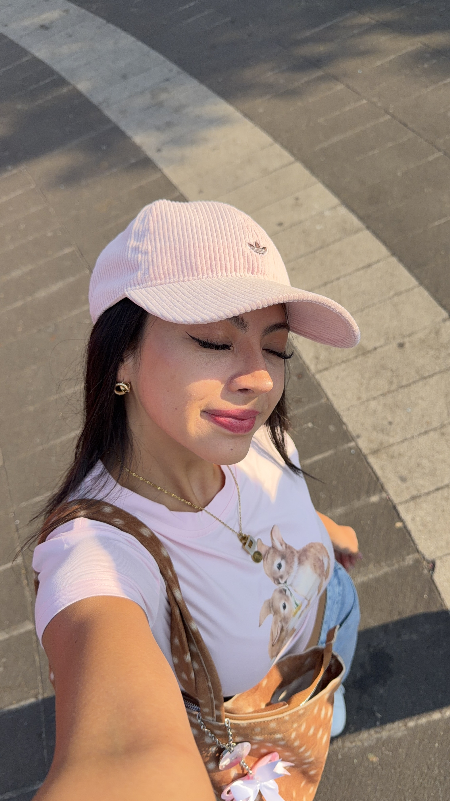
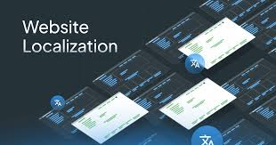
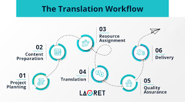
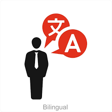
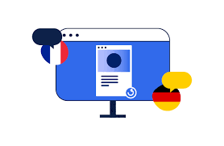
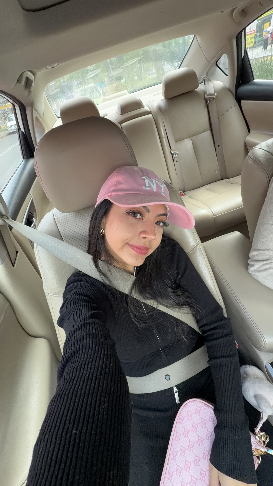

¡Hola! Me llamo Adriana, mis amigos me llaman Dash, soy estudiante de traducción especializándome en traducción científica y técnica, con un creciente interés en la localización web y la comunicación multilingüe. Trabajo con inglés, español y francés, y disfruto adaptando el contenido para que se sienta natural y apropiado culturalmente para cada audiencia. A través de mis estudios, he desarrollado habilidades en tecnologías de traducción, investigación de terminología y adaptación de contenido digital. Estoy especialmente interesada en proyectos relacionados con la ciencia, la tecnología y la comunicación internacional.

En este proyecto trabajé con HTML para construir y estructurar una página web básica utilizando Visual Studio Code. Creé los elementos fundamentales de una página web, organicé los archivos del proyecto y utilicé herramientas como Live Server para visualizar el sitio en el navegador. Este proyecto me ayudó a comprender cómo HTML estructura el contenido y cómo los entornos de desarrollo facilitan la creación de páginas web.
Ver proyecto
En este proyecto exploré cómo JavaScript, los archivos JSON y los estilos CSS trabajan juntos para crear páginas web dinámicas e interactivas. Aprendí a separar los datos de la interfaz mediante JSON, aplicar estilos con CSS y utilizar JavaScript para manipular el contenido de una página web. Este proyecto fortaleció mi comprensión del desarrollo front-end y de cómo diferentes tecnologías interactúan dentro de un proyecto web.
Ver proyecto
Este proyecto se centró en la optimización de un sitio web para motores de búsqueda (SEO). Trabajé con metadatos, estructura de la página y organización del contenido para mejorar la forma en que los motores de búsqueda indexan y muestran las páginas web. El proyecto destacó la importancia de la accesibilidad, el uso de palabras clave y una estructura HTML bien organizada para aumentar la visibilidad en línea.
Ver proyecto
En este proyecto localicé contenido web utilizando herramientas de traducción asistida por computadora (TAC). El proceso incluyó la preparación de archivos del sitio web, la traducción de segmentos manteniendo la consistencia y la adaptación del contenido para una audiencia hispanohablante. Este proyecto me ayudó a comprender los flujos de trabajo de localización y cómo las herramientas de traducción se integran con el desarrollo web.
Ver proyecto
¿Te interesa trabajar conmigo? ¡Pongámonos en contacto!